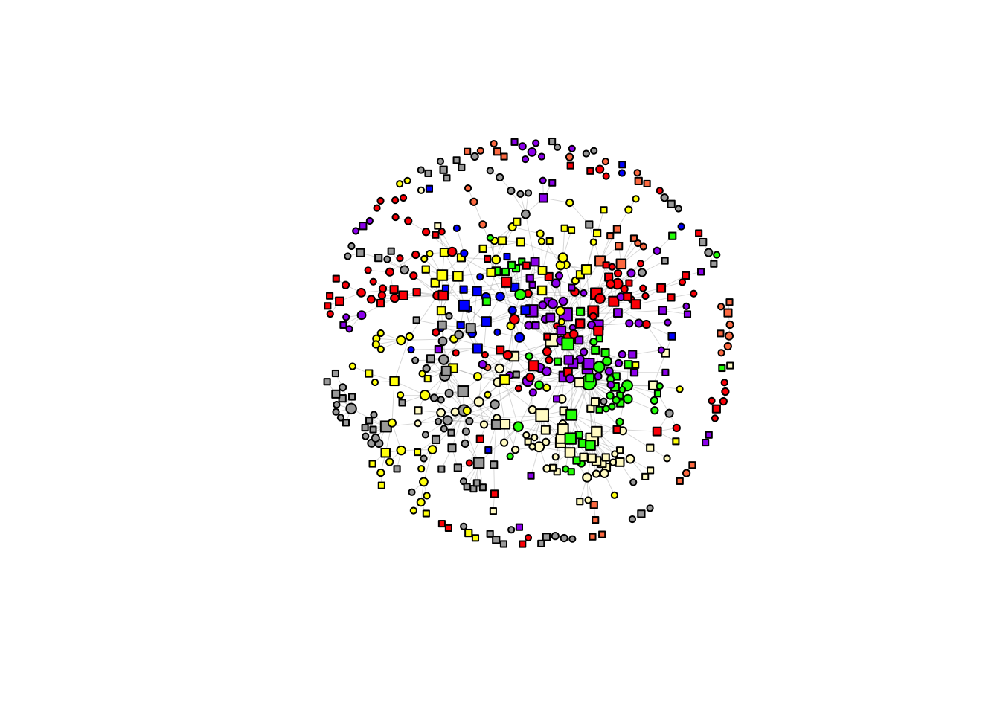
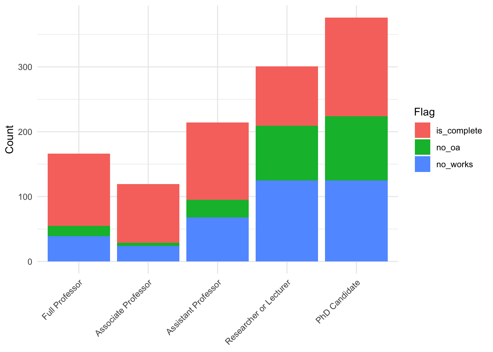
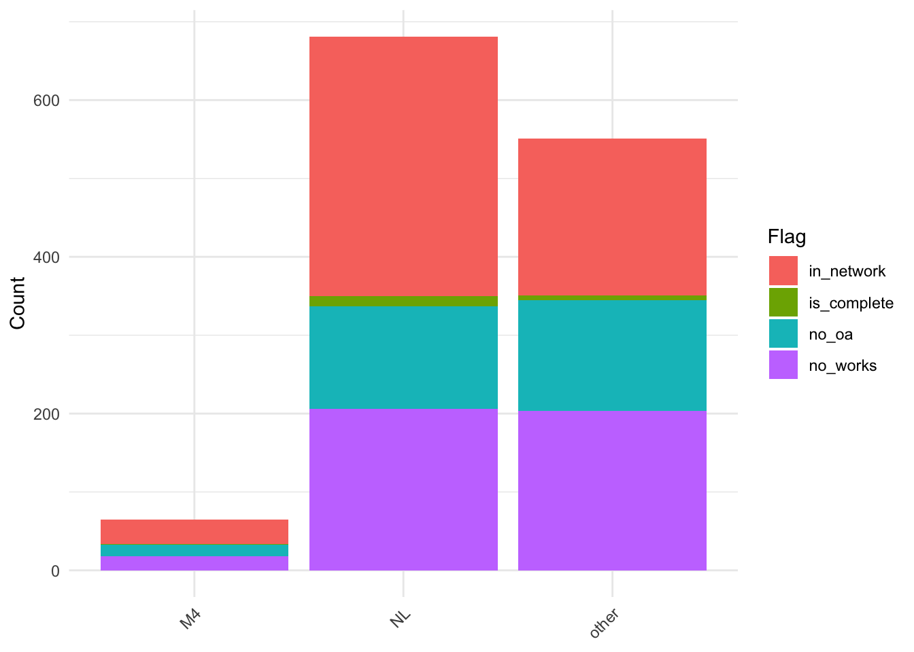
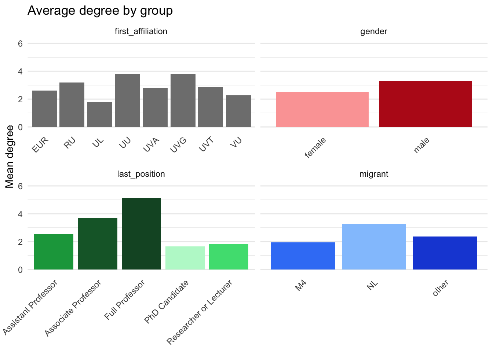
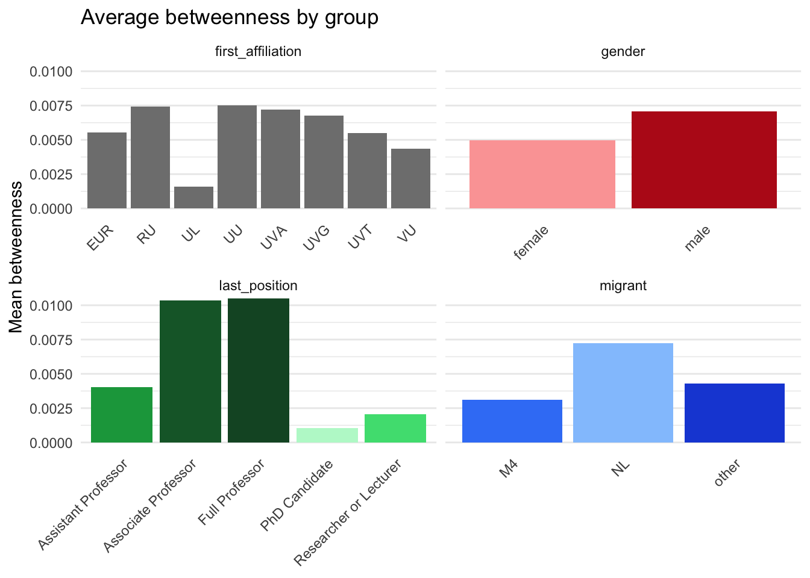
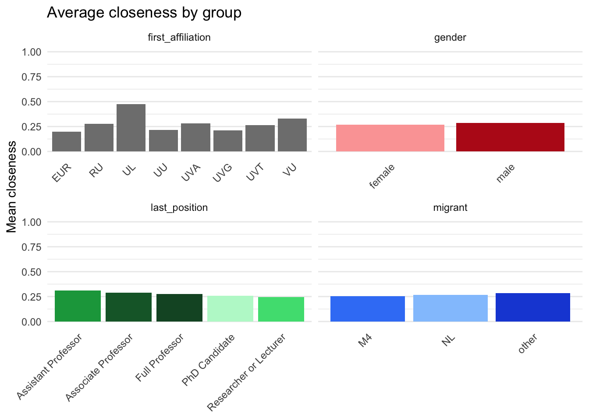

Descriptive Analysis
Getting Started
Functions
determine_complete_cases <-function(data) {
# authors with valid OpenAlex id
has_oa <- data[['scholars_oa']] |>
bind_rows() |>
filter(has_author_id) |>
distinct(uid) |> pull()
# authors with published works during observation period
has_work <- data[['edge_table']] |>
filter(uid != a__uid) |>
distinct(uid) |> pull()
data[['demographics']] <-data[['demographics']] |>
mutate(
flag = ifelse(
uid %in% has_work, 'is_complete',
ifelse(
uid %in% has_oa, 'no_works', 'no_oa'
)
),
is_staff = dplyr::if_all(
c(position_22, position_24, position_25),
~ is.na(.x) | (.x == "staff")
)
)
data[['nodes']] = data[['demographics']] |>
filter(flag == 'is_complete', !is_staff)
return(data)
}Application
select_sample_matrix <- function(d0, sample){
# target: full samp x samp, default NA
d <- matrix(NA_real_, nrow = length(sample), ncol = length(sample),
dimnames = list(sample, sample))
# overlap between samp and existing d0 row/col names
r <- intersect(sample, rownames(d0))
c <- intersect(sample, colnames(d0))
keep <- intersect(r, c)
# copy existing values into the right positions
d[keep, keep] <- d0[keep, keep, drop = FALSE]
return(d)
}select_sample_intdis <- function(topics, sample){
t0 <- topics[["intdis"]][["subfield"]]
t <- matrix(NA_real_, nrow = length(sample), ncol = length(colnames(t0)),
dimnames = list(sample, colnames(t0)))
# fill rows that exist in original t0
keep <- intersect(sample, rownames(t0))
t[keep, ] <- t0[keep, , drop = FALSE]
return(t)
}# select_sample <- function (data, topics){
# # set list with valid uids
# sample <- data[['nodes']] |> distinct(uid) |> pull() |> sort()
# # select valid works and scholars
# data[['works']] <- data[['works']][sample]
# data[['scholars_oa']] <- data[['scholars_oa']][sample]
# data[['edge_table']] <- data[['edge_table']] |> filter(uid %in% sample)
# # prune distances matrices
# years <- c('2022', '2024', '2025')
# for (year in years){
# d0 <- data[['distances']][[year]]
# data[['distances']][[year]] <- select_sample_matrix(d0, sample)
# }
# return(data)
# }
# select_sample_topics <- function(samp, topics){
# sample <- samp[['nodes']] |> distinct(uid) |> pull() |> sort()
# D <- list()
# years <- c('2022', '2024', '2025')
# for (year in years){
# D[[year]] <- topics[['dissim']][['subfield']][['2022']] |>
# select_sample_matrix(sample)
# }
# samp[['dissim']] <- D
# samp[['intdis']] <- topics |> select_sample_intdis(sample)
# return(samp)
# }
# samp <- data |>
# select_sample() |>
# select_sample_topics(topics)# step 2: prune works for selection
make_adjacency_matrix <- function(
data, uids, type, min_year = 2020, max_year = 2026, weighted = FALSE
) {
# make edgelist from works
edges <- data[['works']][uids] |>
purrr::keep(~ nrow(.x) > 0) |>
bind_rows() |>
filter(publication_year >= min_year, publication_year <= max_year) |>
select(uid, work_id, authorships, publication_year) |>
rename(e_uid = uid) |>
distinct(work_id, authorships, publication_year, .keep_all = TRUE) |>
unnest(authorships) |>
filter(e_uid != uid) |>
filter(uid %in% uids, e_uid %in% uids)
if (type != 'all') {
edges <- edges |> filter(author_position != type)
}
# calculate the number of edges between ego and alters.
edge_counts <- edges |> count(e_uid, uid, name="w")
# make edgelist symetrical
if (type == 'all') {
edge_counts <- bind_rows(
edge_counts,
edge_counts %>%
rename(uid = e_uid, e_uid = uid)
) %>%
group_by(uid, e_uid) %>%
summarise(w = sum(w), .groups = "drop")
}
# convert counts to incidences
if (!weighted) {
edge_counts <- edge_counts %>% mutate(w = 1L)
}
# all nodes appearing as ego or alter
nodes <- sort(unique(c(edge_counts$e_uid, edge_counts$uid)))
# complete matrix grid and pivot to wide
adj <- edge_counts %>%
rename(from = e_uid, to = uid) %>%
complete(from = nodes, to = nodes, fill = list(w = NA)) %>%
pivot_wider(names_from = to, values_from = w) %>%
arrange(from)
# convert to matrix and set rownames
mat <- adj %>% as.data.frame()
row_ids <- mat$from
mat$from <- NULL
mat <- as.matrix(mat)
rownames(mat) <- row_ids
diag(mat) <- 0
# make sure the matrices are consistent across waves
all_uids <- as.character(uids)
# indices of existing rows/cols in desired order
ri <- match(all_uids, rownames(mat))
ci <- match(all_uids, colnames(mat))
# start with full NA matrix
mat_full <- matrix(NA, nrow = length(all_uids), ncol = length(all_uids),
dimnames = list(all_uids, all_uids))
# copy overlap block
mat_full[!is.na(ri), !is.na(ci)] <- mat[ri[!is.na(ri)], ci[!is.na(ci)], drop = FALSE]
mat <- mat_full
#optional: no self-loops on diagonal
mat[is.na(mat)] <- 0
mat
}
fcolnet2 <- function(
data,
university = NULL,
position = NULL,
discipline = NULL,
type = 'all',
waves = list(c(2019, 2022), c(2023, 2024), c(2025, 2026))
){
valid_disciplines <- c("Sociology", "Political Sciences")
valid_universities <- c("UVA","EUR","UL","VU","UVG","UU","RU","UVT")
valid_positions <- c("Associate Professor","PhD Candidate","Full Professor",
"Researcher or Lecturer","Assistant Professor")
# helper: set default + validate
set_and_check <- function(x, valid, name = deparse(substitute(x))) {
x <- if (is.null(x)) valid else x
bad <- setdiff(unique(na.omit(x)), valid)
if (length(bad)) stop("Invalid ", name, ": ", paste(bad, collapse = ", "), call. = FALSE)
x
}
# set and check values
discipline <- set_and_check(discipline, valid_disciplines, "discipline")
university <- set_and_check(university, valid_universities, "university")
position <- set_and_check(position, valid_positions, "position")
min_year <- min(unlist(waves))
max_year <- max(unlist(waves))
# step 1: make selection of nodes
authors <- data[["demographics"]] |>
filter(
if_any(c(university_22_first, university_24_first, university_25_first),
~ .x %in% university),
if_any(c(discipline_22, discipline_24, discipline_25),
~ .x %in% discipline),
if_any(c(position_22, position_24, position_25),
~ .x %in% position)
) |>
arrange(uid)
uids <- authors |> pull(uid) |> sort() |> unique()
# step 3: create empty matrixes (wave, i, j)
nwaves <- length(waves)
nets <- list()
for (w in 1:length(waves)){
nets[[w]] <- make_adjacency_matrix(
data, uids, type, min_year = waves[[w]][1], max_year = waves[[w]][2])
}
# step 4: fill nets
output <- list(
data = authors,
nets = nets
)
return(output)
}net <- fcolnet2(data,
type = 'all',
waves = list(c(2020, 2026))
)
noisolate <- rowSums(net$nets[[1]]) > 0
net$nets[[1]] = net$nets[[1]][noisolate, noisolate]
net$graph <- igraph::graph_from_adjacency_matrix(
net$nets[[1]],
mode = c("undirected"),
weighted = NULL,
diag = FALSE,
add.colnames = NULL,)
df_ego <- net$data |>
filter(uid %in% colnames(net$nets[[1]]))|>
mutate(
uni = coalesce(university_22_first, university_24_first, university_25_first)
) |>
arrange(uid)
l <- layout_with_fr(net$graph, niter = 1500)
plot(net$graph,
vertex.color = ifelse(df_ego$uni == "UVA", "red",
ifelse(df_ego$uni == "UVG", "lemonchiffon",
ifelse(df_ego$uni == "VU", "darkgrey",
ifelse(df_ego$uni == "UVT", "blue",
ifelse(df_ego$uni == "RU", "purple",
ifelse(df_ego$uni == "EUR", "yellow",
ifelse(df_ego$uni == "UU", "green",
ifelse(df_ego$uni == "UL", "coral", "white")))))))),
vertex.shape = ifelse(df_ego$gender == 'female', "circle", 'square'),
vertex.size = 2 + igraph::degree(net$g, mode = 'in') ^ 0.5,
vertex.label = NA,
vertex.size = 4,
edge.width = 0.2,
edge.arrow.size = 0.2,
layout = l)
plot_df <- data[["demographics"]] |>
mutate(
position = factor(
coalesce(position_25, position_24, position_22),
levels = c(
"Full Professor", "Associate Professor", "Assistant Professor",
"Researcher or Lecturer", "PhD Candidate"
)
),
flag = forcats::fct_na_value_to_level(as.factor(flag))
) |>
filter(!is.na(position)) |>
count(position, flag)
ggplot(plot_df, aes(x = position, y = n, fill = flag)) +
geom_col() +
labs(x = NULL, y = "Count", fill = "Flag") +
theme_minimal() +
theme(axis.text.x = element_text(angle = 45, hjust = 1))
plot_df <- data[["demographics"]] |>
mutate(
# position = factor(
# coalesce(position_25, position_24, position_22),
# levels = c(
# "Full Professor", "Associate Professor", "Assistant Professor",
# "Researcher or Lecturer", "PhD Candidate"
# )
# ),
flag = forcats::fct_na_value_to_level(as.factor(flag))
) |>
filter(!is.na(migrant)) |>
count(migrant, flag)
ggplot(plot_df, aes(x = migrant, y = n, fill = flag)) +
geom_col() +
labs(x = NULL, y = "Count", fill = "Flag") +
theme_minimal() +
theme(axis.text.x = element_text(angle = 45, hjust = 1))
net_first <- fcolnet2(data,
type = 'first',
waves = list(c(2019, 2026))
)
noisolate = rowSums(net_first$nets[[1]]) > 0
# net_first$nets[[1]] <- net_first$nets[[1]][noisolate, noisolate]
net_first$graph <- igraph::graph_from_adjacency_matrix(
net_first$nets[[1]],
mode = c("directed"),
weighted = NULL,
diag = FALSE,
add.colnames = NULL,)
net_last <- fcolnet2(data,
type = 'last',
waves = list(c(2019, 2026))
)
noisolate <- rowSums(net_last$nets[[1]]) > 0
# net_last$nets[[1]] <- net_last$nets[[1]][noisolate, noisolate]
net_last$graph <- igraph::graph_from_adjacency_matrix(
net_last$nets[[1]],
mode = c("directed"),
weighted = NULL,
diag = FALSE,
add.colnames = NULL,)compute_ego_statistics <- function(nets) {
g <- nets$graph
stopifnot(inherits(g, "igraph"))
is_dir <- igraph::is_directed(g)
# 1) Basic degrees
degree_total <- igraph::degree(
g,
mode = if (is_dir) "all" else "total"
)
degree_in <- if (is_dir) {
igraph::degree(g, mode = "in")
} else {
rep(NA_real_, igraph::vcount(g))
}
degree_out <- if (is_dir) {
igraph::degree(g, mode = "out")
} else {
rep(NA_real_, igraph::vcount(g))
}
# 2) Betweenness (normalized)
betweenness <- igraph::betweenness(
g,
directed = is_dir,
normalized = TRUE
)
# 3) Closeness (normalized)
closeness <- suppressWarnings(
igraph::closeness(
g,
mode = if (is_dir) "all" else "all",
normalized = TRUE
)
)
# 4) Assemble into a tibble
stats <- tibble::tibble(
uid = igraph::V(g)$name,
degree = as.numeric(degree_total),
indegree = as.numeric(degree_in),
outdegree = as.numeric(degree_out),
betweenness = as.numeric(betweenness),
closeness = as.numeric(closeness),
)
# 9) Optionally add demographics stored in nets$data
if (!is.null(nets$data) && "uid" %in% colnames(nets$data)) {
stats <- nets$data |>
right_join(stats, by = "uid") |>
arrange(uid) |>
select(!initials:maiden_name) |>
select(!gender_prob:origin)
}
return(stats)
}desc_data <- data[["demographics"]] |>
mutate(
first_affiliation = coalesce(university_22_first, university_24_first, university_25_first),
last_position = factor(
coalesce(position_25, position_24, position_22),
levels = c(
"Full Professor", "Associate Professor", "Assistant Professor",
"Researcher or Lecturer", "PhD Candidate"
)
),
gender = factor(gender, levels = c("female", "male")),
migrant = factor(migrant, levels = c("NL", "M4", "other"))
)
desc <- desc_data |>
select(gender, migrant, first_affiliation, last_position) |>
pivot_longer(everything(), names_to = "variable", values_to = "value") |>
group_by(variable) |>
mutate(
# preserve existing factor levels when present; otherwise make a factor
value = if (is.factor(value)) value else factor(value),
value = fct_explicit_na(value, na_level = "Missing"),
# make sure "Missing" goes last
value = fct_relevel(value, "Missing", after = Inf)
) |>
count(variable, value, name = "n") |>
mutate(
prop = n / sum(n),
pct = percent(prop, accuracy = 0.1)
) |>
ungroup() |>
arrange(variable, value)
descgroup_means <- function(df, group_var) {
df |>
filter(!is.na(.data[[group_var]])) |>
group_by(.data[[group_var]]) |>
summarise(
n = n(),
degree_mean = mean(degree, na.rm = TRUE),
betweenness_mean = mean(betweenness, na.rm = TRUE),
closeness_mean = mean(closeness, na.rm = TRUE),
.groups = "drop"
) |>
rename(group = 1) |>
mutate(group_var = group_var, .before = group)
}
ego <- net$stats$ego |>
mutate(
first_affiliation = coalesce(university_22_first, university_24_first, university_25_first),
last_position = factor(
coalesce(position_25, position_24, position_22),
levels = c(
"Full Professor", "Associate Professor", "Assistant Professor",
"Researcher or Lecturer", "PhD Candidate"
)
),
gender = factor(gender, levels = c("female", "male")),
migrant = factor(migrant, levels = c("NL", "M4", "other"))
)
means_by_gender <- group_means(ego, "gender")
means_by_position <- group_means(ego, "last_position")
means_by_migrant <- group_means(ego, "migrant")
means_by_affiliation <- group_means(ego, "first_affiliation")
means_all <- bind_rows(means_by_gender, means_by_position, means_by_migrant, means_by_affiliation)
means_alllibrary(dplyr)
library(tidyr)
library(ggplot2)
library(patchwork)
plot_data <- means_all |>
pivot_longer(
cols = c(degree_mean, betweenness_mean, closeness_mean),
names_to = "metric",
values_to = "mean"
) |>
mutate(
metric = factor(
metric,
levels = c("degree_mean", "betweenness_mean", "closeness_mean"),
labels = c("Degree", "Betweenness", "Closeness")
)
)
base_theme <- theme_minimal() +
theme(
axis.text.x = element_text(angle = 45, hjust = 1),
panel.grid.major.x = element_blank(),
legend.position = "none"
)
pal <- c(
"female" = "#fca5a5",
"male" = "#b91c1c",
"NL" = "#93c5fd",
"M4" = "#3b82f6",
"other" = "#1d4ed8",
"Full Professor" = "#14532d",
"Associate Professor" = "#166534",
"Assistant Professor" = "#16a34a",
"Researcher or Lecturer" = "#4ade80",
"PhD Candidate" = "#bbf7d0"
)
p_degree <- plot_data |>
filter(metric == "Degree") |>
ggplot(aes(x = group, y = mean, fill = group)) +
geom_col() +
facet_wrap(~ group_var, scales = "free_x") +
coord_cartesian(ylim = c(0, 6)) +
scale_fill_manual(values = pal) +
labs(
x = NULL,
y = "Mean degree",
title = "Average degree by group"
) +
base_theme
p_betweenness <- plot_data |>
filter(metric == "Betweenness") |>
ggplot(aes(x = group, y = mean, fill = group)) +
geom_col() +
facet_wrap(~ group_var, scales = "free_x") +
coord_cartesian(ylim = c(0, 0.01)) +
scale_fill_manual(values = pal) +
labs(
x = NULL,
y = "Mean betweenness",
title = "Average betweenness by group"
) +
base_theme
p_closeness <- plot_data |>
filter(metric == "Closeness") |>
ggplot(aes(x = group, y = mean, fill = group)) +
geom_col() +
facet_wrap(~ group_var, scales = "free_x") +
coord_cartesian(ylim = c(0, 1)) +
scale_fill_manual(values = pal) +
labs(
x = NULL,
y = "Mean closeness",
title = "Average closeness by group"
) +
base_theme
p_degree 


tt_gender <- ego |>
filter(!is.na(gender)) |>
pivot_longer(c(degree, betweenness, closeness), names_to = "metric", values_to = "value") |>
group_by(metric) |>
summarise(
test = list(t.test(value ~ gender)),
.groups = "drop"
) |>
mutate(tidy = map(test, broom::tidy)) |>
select(metric, tidy) |>
unnest(tidy) |>
mutate(
group_var = 'gender',
group1 = 'female',
group2 = 'male'
) |>
relocate(group_var, .before = metric) |>
relocate(group1, group2, .after = metric) |>
select(-estimate1, -estimate2, -alternative) |>
rename(p_value = p.value)
tt_genderpairwise_ttests_with_stats <- function(
df, group_var, metrics = c("degree","betweenness","closeness"),
p_adjust = "holm"
) {
df2 <- df |>
filter(!is.na(.data[[group_var]])) |>
select(all_of(c(group_var, metrics))) |>
mutate("{group_var}" := droplevels(as.factor(.data[[group_var]])))
# all unordered pairs of group levels
lvls <- levels(df2[[group_var]])
pairs <- combn(lvls, 2, simplify = FALSE)
# long metrics
df_long <- df2 |>
pivot_longer(all_of(metrics), names_to = "metric", values_to = "value")
out <- map_dfr(pairs, function(pr) {
g1 <- pr[[1]]; g2 <- pr[[2]]
df_pair <- df_long |>
filter(.data[[group_var]] %in% c(g1, g2)) |>
mutate(g = droplevels(.data[[group_var]]))
df_pair |>
group_by(metric) |>
summarise(
test = list(t.test(value ~ g)), # Welch by default
.groups = "drop"
) |>
mutate(tidy = map(test, broom::tidy)) |>
unnest(tidy) |>
transmute(
group_var = group_var,
metric,
group1 = g1,
group2 = g2,
statistic = as.numeric(statistic), # this is t
parameter = as.numeric(parameter), # df
estimate = estimate, # diff in means (group2 - group1) per broom
conf.low, conf.high,
p_value = p.value,
method
)
})
# adjust p-values within each (group_var, metric)
out |>
group_by(group_var, metric) |>
mutate(p_adj = p.adjust(p_value, method = p_adjust)) |>
ungroup()
}
tt_position <- pairwise_ttests_with_stats(ego, "last_position")
tt_migrant <- pairwise_ttests_with_stats(ego, "migrant")
tt_affiliation <- pairwise_ttests_with_stats(ego, "first_affiliation")
tt_positionego2 <- net_first$stats$ego |>
mutate(
first_affiliation = coalesce(university_22_first, university_24_first, university_25_first),
last_position = factor(
coalesce(position_25, position_24, position_22),
levels = c(
"Full Professor", "Associate Professor", "Assistant Professor",
"Researcher or Lecturer", "PhD Candidate"
)
),
gender = factor(gender, levels = c("female", "male")),
migrant = factor(migrant, levels = c("NL", "M4", "other"))
)
tt_gender2 <- ego2 |>
filter(!is.na(gender)) |>
pivot_longer(c(indegree, outdegree), names_to = "metric", values_to = "value") |>
group_by(metric) |>
summarise(
test = list(t.test(value ~ gender)),
.groups = "drop"
) |>
mutate(tidy = map(test, broom::tidy)) |>
select(metric, tidy) |>
unnest(tidy)|>
mutate(
group_var = 'gender',
group1 = 'female',
group2 = 'male'
) |>
relocate(group_var, .before = metric) |>
relocate(group1, group2, .after = metric) |>
select(-estimate1, -estimate2, -alternative) |>
rename(p_value = p.value)
tt_position2 <- ego2|>
pairwise_ttests_with_stats('last_position', metrics = c('indegree', 'outdegree'))
tt_migrant2 <- ego2|>
pairwise_ttests_with_stats('migrant', metrics = c('indegree', 'outdegree'))
tt_affiliation2 <- ego2|>
pairwise_ttests_with_stats('first_affiliation', metrics = c('indegree', 'outdegree'))
tt_gender2library(gt)
desc_table = desc |>
select(-pct) |>
left_join(
means_all |> select(-n),
by = join_by(
variable == group_var,
value == 'group'
)
) |>
mutate(
variable = case_when(
variable == 'first_affiliation' ~ 'Affiliation',
variable == 'gender' ~ 'Gender',
variable == 'last_position' ~ 'Position',
variable == 'migrant' ~ 'Migration Background'
),
value = case_when(
value == 'M4' ~ 'Minority',
value == 'NL' ~ 'Majority',
value == 'other' ~ 'Other',
value == 'female' ~ 'Female',
value == 'male' ~ 'Male',
.default = value
),
variable = factor(
variable,
levels = c('Gender', 'Migration Background', 'Affiliation', 'Position')
),
value = factor(
value,
levels = c(
'Female', 'Male', 'Majority', 'Minority', 'Other', 'EUR', 'RU', 'UL',
'UU', 'UVA', 'UVG', 'UVT', 'VU', 'Full Professor', 'Associate Professor',
'Assistant Professor', 'Researcher or Lecturer', 'PhD Candidate', 'Missing'
)
)
) |>
arrange(variable, value)
saveRDS(desc_table, file = file.path('results', 'tables', 'desc.Rds'))
gt_desc_table = desc_table |>
group_by(variable) |>
gt() |>
cols_label(
.list = c(
"variable" = "",
"value" = "",
"n" = 'N',
"prop" = '%',
'degree_mean' = 'Degree',
'betweenness_mean' = 'Betweenness',
'closeness_mean' = 'Closeness'
)
) |>
tab_spanner(
label = 'Centrality',
columns = c(degree_mean, betweenness_mean, closeness_mean)) |>
fmt_number(decimals = 3, drop_trailing_zeros = FALSE) |>
fmt_number(columns = 3, decimals = 0) |>
fmt_percent(columns = 4) |>
fmt_missing( missing_text = '') |>
cols_align(columns = 2, align = 'left') |>
cols_align(
columns = c(degree_mean, betweenness_mean, closeness_mean),
align = 'center'
)
saveRDS(gt_desc_table, file = file.path('results', 'tables', 'gtdesc.RDS'))
gt_desc_table| N | % |
Centrality
|
|||
|---|---|---|---|---|---|
| Degree | Betweenness | Closeness | |||
| Gender | |||||
| Female | 669 | 51.34% | 2.500 | 0.005 | 0.268 |
| Male | 619 | 47.51% | 3.289 | 0.007 | 0.284 |
| Missing | 15 | 1.15% | |||
| Migration Background | |||||
| Majority | 681 | 52.26% | 3.266 | 0.007 | 0.269 |
| Minority | 65 | 4.99% | 1.935 | 0.003 | 0.255 |
| Other | 551 | 42.29% | 2.366 | 0.004 | 0.286 |
| Missing | 6 | 0.46% | |||
| Affiliation | |||||
| EUR | 131 | 10.05% | 2.614 | 0.006 | 0.198 |
| RU | 145 | 11.13% | 3.188 | 0.007 | 0.279 |
| UL | 155 | 11.90% | 1.757 | 0.002 | 0.474 |
| UU | 89 | 6.83% | 3.815 | 0.007 | 0.217 |
| UVA | 292 | 22.41% | 2.788 | 0.007 | 0.281 |
| UVG | 176 | 13.51% | 3.788 | 0.007 | 0.209 |
| UVT | 68 | 5.22% | 2.857 | 0.005 | 0.265 |
| VU | 244 | 18.73% | 2.274 | 0.004 | 0.329 |
| Missing | 3 | 0.23% | |||
| Position | |||||
| Full Professor | 166 | 12.74% | 5.139 | 0.015 | 0.275 |
| Associate Professor | 119 | 9.13% | 3.708 | 0.010 | 0.287 |
| Assistant Professor | 214 | 16.42% | 2.562 | 0.004 | 0.313 |
| Researcher or Lecturer | 301 | 23.10% | 1.848 | 0.002 | 0.246 |
| PhD Candidate | 376 | 28.86% | 1.643 | 0.001 | 0.258 |
| Missing | 127 | 9.75% | |||
tt <- bind_rows(
tt_gender, tt_gender2,
tt_position, tt_position2,
tt_migrant, tt_migrant2,
tt_affiliation, tt_affiliation2
) |>
mutate(
metric = factor(
metric, levels = c(
'betweenness', 'closeness', 'degree', 'indegree', 'outdegree')),
group_var = case_when(
group_var == 'first_affiliation' ~ 'Affiliation',
group_var == 'gender' ~ 'Gender',
group_var == 'last_position' ~ 'Position',
group_var == 'migrant' ~ 'Migration Background'
) |>
factor(
levels = c('Gender', 'Migration Background', 'Affiliation', 'Position')
),
group1 = case_when(
group1 == 'female' ~ 'Female',
group1 == 'male' ~ 'Male',
group1 == 'NL' ~ 'Majority',
group1 == 'M4' ~ 'Minority',
group1 == 'other' ~ 'Other',
.default = group1
),
group2 = case_when(
group2 == 'female' ~ 'Female',
group2 == 'male' ~ 'Male',
group2 == 'NL' ~ 'Majority',
group2 == 'M4' ~ 'Minority',
group2 == 'other' ~ 'Other',
.default = group2
),
stars = case_when(
p_value < 0.001 ~ "***",
p_value < 0.01 ~ "**",
p_value < 0.05 ~ "*",
TRUE ~ ""
),
f = sprintf("%.3f(%.0f)%s", statistic, parameter, stars)
) |>
arrange(group_var, metric) |>
select(!statistic:stars) |>
pivot_wider(
id_cols = c(group_var, group1, group2),
names_from = metric,
values_from = c(estimate, f),
names_glue = "{metric}_{.value}"
) |>
(\(x) dplyr::select(
x,
group_var,
group1,
group2,
all_of(sort(setdiff(names(x), c("group_var", "group1", "group2"))))
))()
saveRDS(tt, file = file.path('results', 'tables', 'ttest.Rds'))
gt_tt = tt |>
group_by(group_var) |>
gt() |>
cols_label_with(
fn = \(x) x |>
stringr::str_replace("^degree", "") |>
stringr::str_replace("^betweenness", "") |>
stringr::str_replace("^closeness", "") |>
stringr::str_replace("^indegree", "") |>
stringr::str_replace("^outdegree", "") |>
stringr::str_replace("_estimate$", "ΔM") |>
stringr::str_replace("_f$", "t(df)")
) |>
cols_label(
group_var = "",
group1 = "",
group2 = ""
) |>
cols_merge(
columns = c(group1, group2),
pattern = "({1} - {2})"
) |>
tab_spanner(
label = 'Degree',
columns = c(degree_estimate, degree_f)) |>
tab_spanner(
label = 'In-Degree',
columns = c(indegree_estimate, indegree_f)) |>
tab_spanner(
label = 'Out-Degree',
columns = c(outdegree_estimate, outdegree_f)) |>
tab_spanner(
label = 'Closeness',
columns = c(closeness_estimate, closeness_f)) |>
tab_spanner(
label = 'Betweenness',
columns = c(betweenness_estimate, betweenness_f)) |>
fmt_number(decimals = 3)
saveRDS(gt_tt, file = file.path('results', 'tables', 'gtttest.Rds'))
gt_tt
Betweenness
|
Closeness
|
Degree
|
In-Degree
|
Out-Degree
|
||||||
|---|---|---|---|---|---|---|---|---|---|---|
| ΔM | t(df) | ΔM | t(df) | ΔM | t(df) | ΔM | t(df) | ΔM | t(df) | |
| Gender | ||||||||||
| (Female - Male) | −0.002 | -1.799(496) | −0.016 | -0.802(535) | −0.789 | -3.221(493)** | −0.156 | -1.872(964) | −0.173 | -2.244(1117)* |
| Migration Background | ||||||||||
| (Majority - Minority) | 0.004 | 2.221(50)* | 0.013 | 0.304(36) | 1.330 | 4.502(71)*** | 0.516 | 4.781(168)*** | 0.248 | 1.914(100) |
| (Majority - Other) | 0.003 | 2.624(531)** | −0.018 | -0.810(396) | 0.900 | 3.755(520)*** | 0.429 | 5.267(984)*** | 0.328 | 4.232(1077)*** |
| (Minority - Other) | −0.001 | -0.663(42) | −0.031 | -0.678(41) | −0.431 | -1.508(62) | −0.087 | -0.929(97) | 0.079 | 0.641(83) |
| Affiliation | ||||||||||
| (EUR - RU) | −0.002 | -0.804(109) | −0.081 | -2.671(149)** | −0.573 | -1.434(129) | 0.065 | 0.363(256) | −0.173 | -1.019(221) |
| (EUR - UL) | 0.004 | 3.127(106)** | −0.277 | -5.144(46)*** | 0.858 | 2.665(84)** | 0.602 | 4.767(156)*** | 0.506 | 5.093(172)*** |
| (EUR - UU) | −0.002 | -0.660(65) | −0.019 | -0.785(134) | −1.200 | -1.760(63) | −0.461 | -1.553(105) | −0.346 | -1.362(98) |
| (EUR - UVA) | −0.002 | -1.014(175) | −0.083 | -2.716(180)** | −0.174 | -0.558(185) | 0.258 | 1.846(223) | 0.181 | 1.510(296) |
| (EUR - UVG) | −0.001 | -0.660(108) | −0.012 | -0.461(146) | −1.173 | -2.389(92)* | 0.020 | 0.096(245) | −0.078 | -0.478(242) |
| (EUR - UVT) | 0.000 | 0.026(43) | −0.067 | -1.282(35) | −0.243 | -0.491(39) | 0.211 | 1.137(139) | 0.107 | 0.575(96) |
| (EUR - VU) | 0.001 | 0.821(194) | −0.131 | -3.890(182)*** | 0.340 | 1.171(190) | 0.268 | 1.949(210) | 0.244 | 2.087(280)* |
| (RU - UL) | 0.006 | 2.555(101)* | −0.195 | -3.490(53)*** | 1.431 | 3.367(114)** | 0.538 | 3.896(154)*** | 0.679 | 4.589(149)*** |
| (RU - UU) | 0.000 | -0.024(107) | 0.062 | 2.135(127)* | −0.627 | -0.852(82) | −0.526 | -1.741(111) | −0.173 | -0.626(129) |
| (RU - UVA) | 0.000 | 0.076(139) | −0.002 | -0.067(180) | 0.399 | 0.956(146) | 0.194 | 1.286(210) | 0.354 | 2.180(207)* |
| (RU - UVG) | 0.001 | 0.244(139) | 0.069 | 2.325(138)* | −0.600 | -1.064(128) | −0.045 | -0.205(257) | 0.095 | 0.483(268) |
| (RU - UVT) | 0.002 | 0.695(94) | 0.014 | 0.253(41) | 0.330 | 0.583(61) | 0.146 | 0.756(151) | 0.280 | 1.295(144) |
| (RU - VU) | 0.003 | 1.278(121) | −0.050 | -1.346(191) | 0.913 | 2.273(134)* | 0.203 | 1.371(199) | 0.417 | 2.602(199)** |
| (UL - UU) | −0.006 | -2.025(63)* | 0.257 | 4.856(43)*** | −2.058 | -2.953(68)** | −1.063 | -3.874(78)*** | −0.852 | -3.545(79)*** |
| (UL - UVA) | −0.006 | -3.515(138)*** | 0.193 | 3.438(54)** | −1.032 | -3.004(101)** | −0.344 | -4.158(368)*** | −0.325 | -3.787(352)*** |
| (UL - UVG) | −0.005 | -2.876(94)** | 0.265 | 4.953(45)*** | −2.031 | -3.969(95)*** | −0.582 | -3.273(155)** | −0.584 | -4.154(162)*** |
| (UL - UVT) | −0.004 | -2.004(40) | 0.209 | 2.969(62)** | −1.100 | -2.137(43)* | −0.391 | -2.657(67)** | −0.398 | -2.384(64)* |
| (UL - VU) | −0.003 | -2.011(134)* | 0.145 | 2.511(60)* | −0.518 | -1.596(89) | −0.334 | -4.271(363)*** | −0.262 | -3.186(345)** |
| (UU - UVA) | 0.000 | 0.088(79) | −0.064 | -2.187(155)* | 1.026 | 1.483(67) | 0.719 | 2.560(86)* | 0.527 | 2.113(91)* |
| (UU - UVG) | 0.001 | 0.227(85) | 0.007 | 0.314(118) | 0.027 | 0.034(97) | 0.481 | 1.494(136) | 0.268 | 0.983(125) |
| (UU - UVT) | 0.002 | 0.604(79) | −0.048 | -0.930(33) | 0.958 | 1.210(80) | 0.672 | 2.194(111)* | 0.454 | 1.577(126) |
| (UU - VU) | 0.003 | 1.042(70) | −0.112 | -3.446(161)*** | 1.540 | 2.255(64)* | 0.729 | 2.606(84)* | 0.591 | 2.380(89)* |
| (UVA - UVG) | 0.000 | 0.218(146) | 0.072 | 2.374(166)* | −0.999 | -1.977(101) | −0.238 | -1.269(190) | −0.259 | -1.663(232) |
| (UVA - UVT) | 0.002 | 0.775(63) | 0.016 | 0.294(42) | −0.069 | -0.135(43) | −0.047 | -0.298(91) | −0.073 | -0.407(86) |
| (UVA - VU) | 0.003 | 1.638(202) | −0.048 | -1.275(213) | 0.514 | 1.636(209) | 0.009 | 0.096(487) | 0.063 | 0.600(488) |
| (UVG - UVT) | 0.001 | 0.535(70) | −0.056 | -1.065(34) | 0.931 | 1.467(76) | 0.191 | 0.853(187) | 0.185 | 0.876(138) |
| (UVG - VU) | 0.002 | 1.244(125) | −0.120 | -3.593(171)*** | 1.514 | 3.072(93)** | 0.248 | 1.333(183) | 0.322 | 2.098(222)* |
| (UVT - VU) | 0.001 | 0.546(50) | −0.064 | -1.127(47) | 0.583 | 1.175(39) | 0.057 | 0.362(86) | 0.137 | 0.767(83) |
| Position | ||||||||||
| (Full Professor - Associate Professor) | 0.004 | 1.626(189) | −0.012 | -0.337(178) | 1.431 | 2.648(177)** | 0.325 | 1.200(281) | 0.223 | 0.950(283) |
| (Full Professor - Assistant Professor) | 0.011 | 4.604(136)*** | −0.038 | -1.117(225) | 2.577 | 5.326(136)*** | 0.915 | 4.274(213)*** | 0.775 | 3.931(233)*** |
| (Full Professor - Researcher or Lecturer) | 0.013 | 5.636(120)*** | 0.029 | 0.967(198) | 3.291 | 6.976(124)*** | 1.337 | 6.602(173)*** | 1.116 | 6.092(180)*** |
| (Full Professor - PhD Candidate) | 0.014 | 6.209(110)*** | 0.017 | 0.590(225) | 3.496 | 7.612(112)*** | 1.440 | 7.156(169)*** | 1.063 | 5.817(178)*** |
| (Associate Professor - Assistant Professor) | 0.006 | 3.421(129)*** | −0.026 | -0.695(199) | 1.146 | 3.389(144)*** | 0.590 | 2.986(160)** | 0.551 | 3.190(188)** |
| (Associate Professor - Researcher or Lecturer) | 0.008 | 4.751(106)*** | 0.041 | 1.200(165) | 1.860 | 5.801(121)*** | 1.012 | 5.468(125)*** | 0.893 | 5.692(133)*** |
| (Associate Professor - PhD Candidate) | 0.009 | 5.526(92)*** | 0.029 | 0.877(162) | 2.065 | 6.839(98)*** | 1.115 | 6.071(121)*** | 0.840 | 5.372(131)*** |
| (Assistant Professor - Researcher or Lecturer) | 0.002 | 2.030(198)* | 0.067 | 2.035(210)* | 0.714 | 3.369(208)*** | 0.422 | 5.122(284)*** | 0.341 | 3.778(304)*** |
| (Assistant Professor - PhD Candidate) | 0.003 | 3.492(143)*** | 0.055 | 1.747(222) | 0.919 | 5.038(163)*** | 0.525 | 6.632(246)*** | 0.289 | 3.225(297)** |
| (Researcher or Lecturer - PhD Candidate) | 0.001 | 1.659(130) | −0.013 | -0.460(208) | 0.205 | 1.389(147) | 0.103 | 2.753(545)** | −0.053 | -1.008(654) |